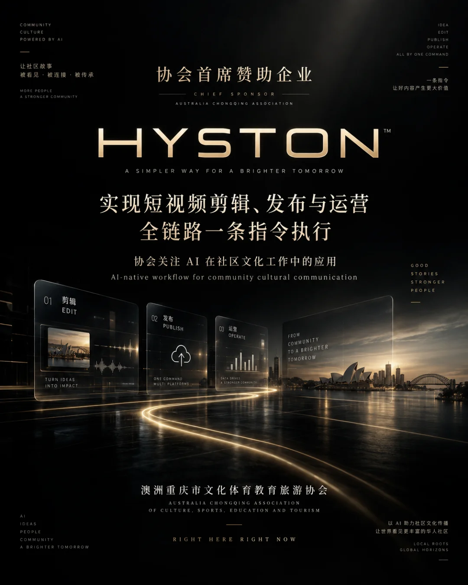
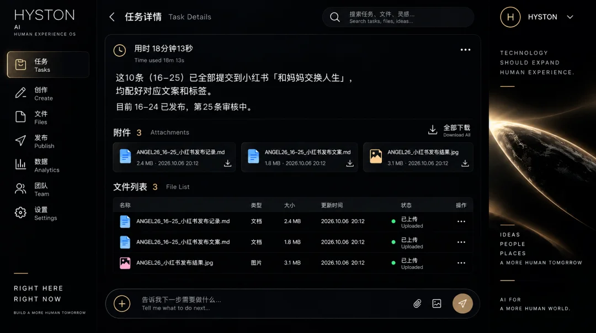
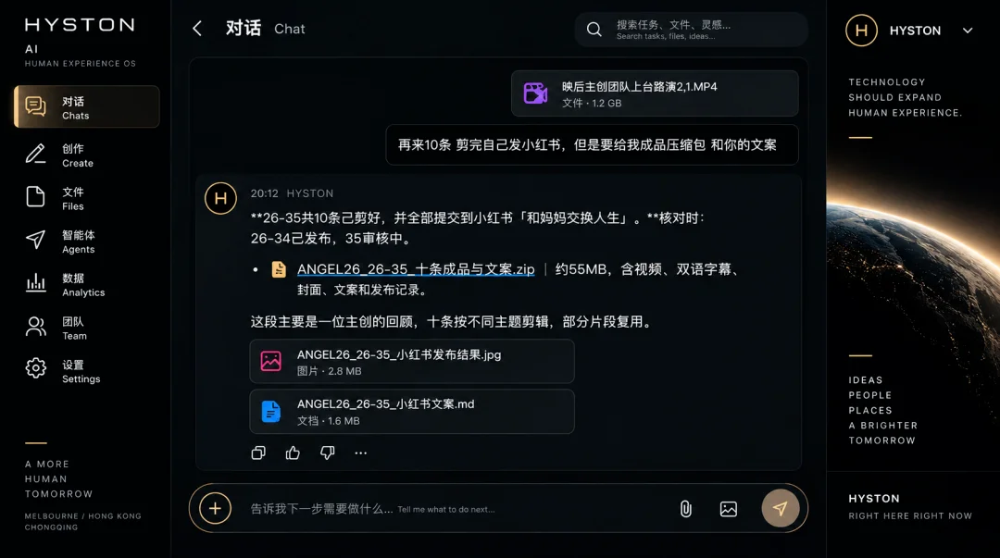
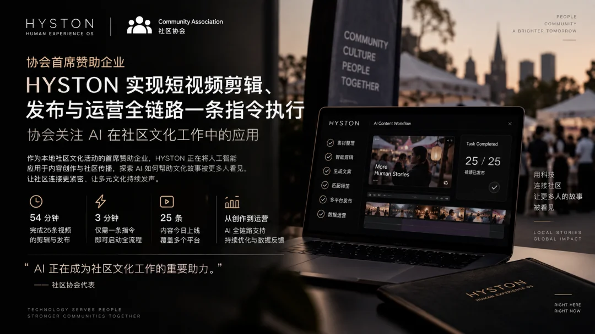

协会首席赞助企业 HYSTON 实现短视频剪辑、发布与运营全链路一条指令执行，协会关注 AI 在社区文化工作中的应用
协会观察｜154天的积累，一条指令跑通短视频全链路
协会首席赞助企业 HYSTON 实现短视频剪辑、发布与运营全链路一条指令执行，协会关注 AI 在社区文化工作中的应用

【墨尔本讯】2026年10月6日，澳洲重庆市文化体育教育旅游协会（CSETA）首席赞助企业、由协会会长黄欣悦创办的 HYSTON，在其 AI 工作系统 AI HYSTON 中实现了短视频从剪辑、发布到运营的全链路执行。整条链路只需要一条指令。

在当天的 ANGEL 26 项目中，人工实际操作时间不到3分钟，主要用于账号接入和发送任务指令。随后，AI HYSTON 用约54分钟连续完成了以下环节：
素材理解-剪辑-双语字幕-文案与标签-整理与发布
当天两条指令共有25条视频完成制作并进入发布流程。
3分钟背后，是154天的积累
一条指令能够驱动整条链路，靠的不是某个新工具或一句提示词。从2026年5月6日起，HYSTON 团队用了154天，持续把真实工作交给 AI，包括项目资料、品牌语言、视觉审美、双语字幕规则、文案习惯、发布规范和历史决策。这些规则在大量实际工作中不断纠错、重做和确认，逐步沉淀为 AI 可以理解和继承的工作上下文。
黄欣悦表示："今天的3分钟，并没有取代过去154天。它恰恰证明了那154天没有白费。"
不只是"更快"，而是知道什么还没完成

协会注意到，这次执行遵循了一个值得关注的原则：AI 不仅要能执行任务，还要能如实判断任务状态，分清哪些已经完成、哪些在等待回复、哪些受阻、哪些需要人工介入。当天未完成的事项被逐一列明，没有被包装成"全部完成"。
对公益与社区组织而言，这一点尤为重要。协会日常工作中有大量琐碎而长期的环节，例如资助申请、活动筹备、物资跟进和多方沟通。真正有用的 AI，应当能进入这些现实流程，而不只是停留在演示阶段。
与协会工作的连接
作为协会首席赞助企业，HYSTON 长期为协会活动提供内容制作、技术与人力支持。协会认为，这次进展的意义不止于内容生产效率，也与协会的几项长期工作直接相关：
文化内容传播
协会的《重庆时空》《重庆市民》等城市文化内容，涉及大量双语字幕、剪辑与多平台发布。一条指令跑通全链路，意味着小型团队也能持续、稳定地输出高质量文化内容。
家族记忆与寻根
HYSTON 正在探索 LIFE ARCHIVE 方向，已开始整理族谱 OCR 样本，用于家族记忆数字化测试。对海外华人家庭而言，族谱、老照片和长辈口述往往散落各处，这一方向与协会在文化传承和川渝乡情连接上的工作高度契合。
社区活动与资助
协会文化节项目的资助申请正在筹备中，活动计划免费开放，规模不少于1,000人。HYSTON 将以实物赞助形式投入人力支持，AI 工具也将协助完成筹备、跟进与记录等工作。
青年与实习
HYSTON 正在筹备为期三个月的线上实习项目。协会期待未来为留学生和青年社区成员提供接触 AI 实际工作流程的机会。
技术越快，人的经验越重要
黄欣悦表示，AI 的效率不应以牺牲人的判断为代价。人工操作时间可以继续减少，但人应当把时间放回更难替代的地方：关系、判断、创作、现场与信任。
"当技术越来越快，人的生命经验，不能因此越来越薄。"
这也与协会一贯的理念一致：无论使用怎样的工具，文化交流最终都要落到真实的人、家庭与社区之中。
澳洲重庆市文化体育教育旅游协会

Association Watch | 154 Days of Building, One Command to Run the Entire Short-Video Workflow
HYSTON, Chief Sponsor of the Association, Achieves One-Command Execution Across Short-Video Editing, Publishing and Operations as the Association Explores AI Applications in Community Cultural Work
[image]
MELBOURNE, 6 October 2026— HYSTON, Chief Sponsor of the Australia Sichuan–Chongqing Culture, Education and Sports Association (CSETA), founded by Association President Hyston Huang, has completed an end-to-end short-video workflow through its AI operating system, AI HYSTON, covering editing, publishing and ongoing content operations.
The entire workflow can now be initiated with a single instruction.
During the ANGEL 26 project on 6 October, total human operating time was under three minutes, primarily for account access and sending task instructions.
AI HYSTON then spent approximately 54 minutes continuously executing the following tasks:
Understanding source footage
Video editing
Bilingual subtitles
Copywriting and hashtag generation
File organisation and publishing
Across two instructions, a total of25 videos were produced and moved into the publishing workflow on the same day.
Behind Three Minutes Are 154 Days of Accumulation
A single instruction can now activate an entire workflow, but this capability did not come from a new tool or a clever prompt.
Since 6 May 2026, the HYSTON team has spent 154 days continuously placing real work into AI systems, including project documentation, brand language, visual preferences, bilingual subtitle standards, copywriting conventions, publishing requirements and historical decisions.
These rules were repeatedly corrected, rebuilt and validated through real operational work. Over time, they became working context that AI could understand, retain and apply.
Hyston Huang said:
“Today’s three minutes did not replace the previous 154 days. They prove that those 154 days were not wasted.”
Not Just Faster, but Able to Know What Is Still Unfinished
The Association also noted an important principle behind this execution.
AI should not only be able to perform tasks. It should also be able to truthfully identify their status: what has been completed, what is waiting for a response, what is blocked, and what still requires human intervention.
Items that remained unfinished on 6 October were explicitly recorded rather than being presented as completed.
For non-profit and community organisations, this distinction is particularly important.
Much of everyday association work involves small but persistent operational tasks, including grant applications, event preparation, supplier follow-up and communication across multiple stakeholders.
Useful AI needs to enter these real workflows, rather than remain confined to demonstrations.
How This Connects to the Association’s Work
As the Association’s Chief Sponsor, HYSTON has long provided content production, technical support and personnel resources for Association activities.
The Association believes this latest development is significant not only for production efficiency, but also for several areas of its long-term work.
Cultural content distribution
Projects such asChongqing Time and SpaceandChongqing Citizensinvolve substantial bilingual subtitling, editing and multi-platform distribution.
An end-to-end workflow that can be triggered through one instruction means that even small teams may be able to produce high-quality cultural content more consistently and sustainably.
Family memory and roots
HYSTON is developing its LIFE ARCHIVE initiative and has begun organising genealogy OCR samples for family-memory digitisation testing.
For overseas Chinese families, genealogies, old photographs and oral histories are often scattered across generations and locations.
This direction strongly aligns with the Association’s work in cultural continuity, family memory and Sichuan–Chongqing community connection.
Community events and grants
The Association is currently preparing grant applications for a cultural festival planned as a free public event with an expected attendance of at least 1,000 people.
HYSTON will contribute personnel support as an in-kind sponsorship, while AI tools are also expected to assist with planning, follow-up, documentation and operational coordination.
Youth and internships
HYSTON is also preparing a three-month online internship programme.
The Association hopes that, in the future, international students and young members of the community will have opportunities to experience how AI is actually used inside real working processes, rather than only learning about it in theory.
As Technology Accelerates, Human Experience Matters More
Hyston Huang said that greater AI efficiency should not come at the expense of human judgement.
Human operating time can continue to fall, but that time should be redirected toward the areas that are harder to replace: relationships, judgement, creation, presence and trust.
“As technology moves faster, human experience must not become thinner.”
This principle also reflects the Association’s broader approach.
Whatever tools are used, cultural exchange ultimately has to return to real people, real families and real communities.
CSETA